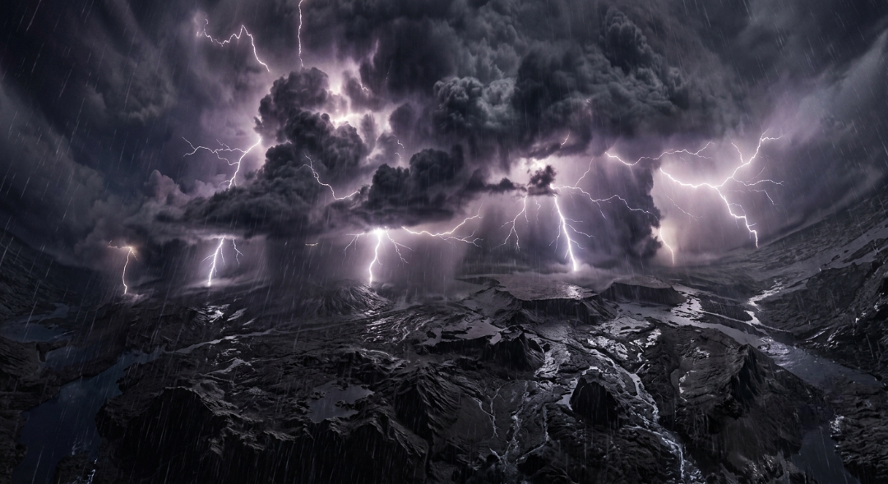
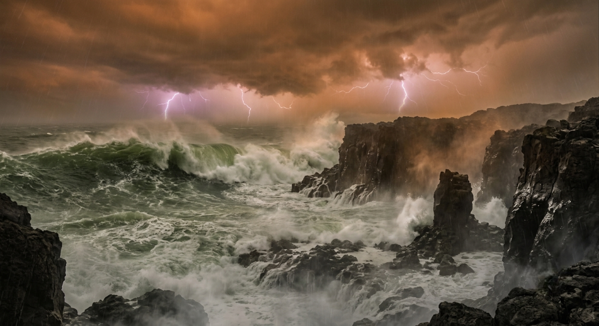
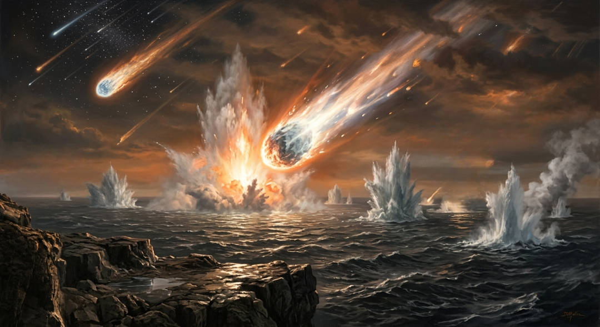
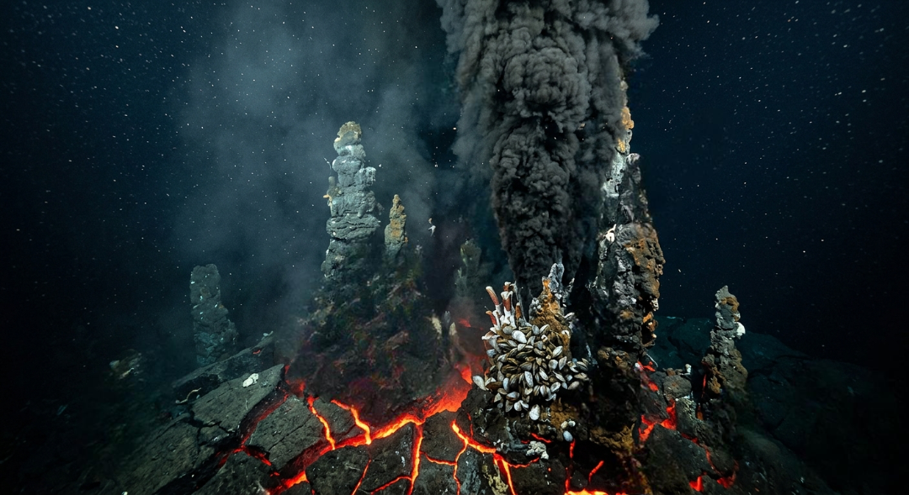
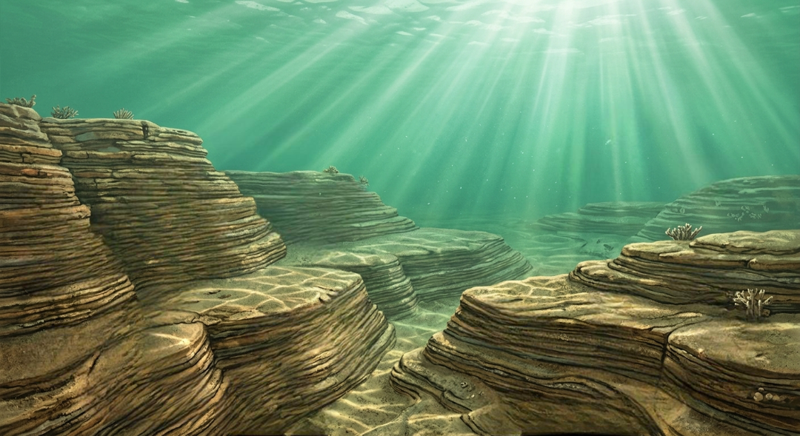

Велике кондесаційне охолодження (4 - 3.95 мільярдів років тому)
Коли первинне вулканічне пекло на планеті почало слабшати, температура у верхніх шарах надгустої атмосфери нарешті перетнула критичну позначку і впала нижче точки кипіння води. Це спровокувало початок найбільш масштабного і тривалого фізичного процесу в історії Землі — глобальної конденсації водяної пари, яка накопичувалася в небі мільярдами тонн протягом сотень мільйонів років. Титанічні хмари, що повністю закривали планету від сонячного світла, стали настільки важкими, що на гарячу базальтову поверхню ринули перші краплі води, які миттєво випаровувалися назад, забираючи з собою залишки поверхневого тепла.
Поступово поверхня охолола достатньо, щоб вода перестала миттєво перетворюватися на пару, і на Землю обрушився безперервний, колосальний за своєю силою глобальний дощ, який тривав не просто роками, а цілими століттями й тисячоліттями. Мільярди кубометрів води стікали по схилах первинних базальтових щитів, вимиваючи з породи мінерали та розчиняючи атмосферні гази. Цей безпрецедентний потоп заповнював кожну глибоку западину, кожну вулканічну улоговину та кратер, що виникали на нерівній, понівеченій тріщинами корі молодої планети.
Оскільки первинна атмосфера була перенасичена сіркою, вуглекислим газом та сполуками хлору, ці перші дощові потоки були надзвичайно агресивними кислими розчинами, які вступали в бурхливі хімічні реакції з розпеченою породою. Проте саме цей руйнівний процес змивання та накопичення води дозволив планеті створити перші стабільні рідкі резервуари. Гарячий вогняний світ почав стрімко поступатися місцем новій, вологій реальності, закладаючи перші обриси майбутньої гідросфери, яка назавжди змінить обличчя Землі.

Глобальна конденсація
Столітній безперервний дощ, викликаний різким охолодженням верхніх шарів атмосфери, що започаткував утворення першої рідкої гідросфери.
Формування кислих праокеанів (3.95 - 3.85 мільярдів років тому)
У результаті всесвітнього столітнього дощу на Землі утворився єдиний, безкрайній праокеан, який покривав майже всю поверхню планети, за винятком поодиноких вершин найвищих активних вулканів. Вода цього первісного океану за своїм хімічним складом була абсолютно далекою від сучасної морської води і являла собою гарячий, токсичний і висококислотний розчин. Через величезну кількість розчиненого вуглекислого газу та сполук заліза, вода праокеану мала глибокий зеленувато-оливковий або навіть брудний колір, а не звичний нам блакитний.
Температура цього глобального суперморя все ще залишалася екстремально високою, коливаючись у межах від 80 до 100 градусів за Цельсієм, що змушувало воду постійно парувати під важким помаранчевим небом. Потужні припливні хвилі, висота яких сягала десятків метрів через близькість новонародженого Місяця, з неймовірною силою розбивалися об базальтові скелі рідкісних вулканічних островів. Ці хвилі безперервно руйнували сушу, забираючи в океанічні глибини все нові й нові порції хімічних елементів, натрію та калію, що призводило до поступової зміни хімічного балансу води.
Незважаючи на свою токсичність та агресивність, цей кислий праокеан став гігантським хімічним реактором планетарного масштабу, де у водному середовищі взаємодіяли тисячі складних сполук. Постійні підводні виверження збагачували воду мікроелементами, а відсутність вільного кисню консервувала ці хімічні сполуки від руйнування. Планета повністю стабілізувала свої водні запаси, перетворившись на водний світ, де у глибоких, темних і гарячих придонних шарах починали формуватися унікальні фізико-хімічні умови для майбутніх тектонічних і біологічних зрушень.

Зелений праокеан
Перші глобальні водойми з високою кислотністю та температурою близько 90°C, які мали оливковий колір через насиченість залізом.
Космічний штурм та вода з комет (3.85 - 3.80 мільярдів років тому)
Якраз у той час, коли перші океани почали стабілізуватися, Сонячна система пережила останній масштабний сплеск космічного хаосу, відомий як Пізнє важке бомбардування. Орбіти гігантських планет-газовиків змістилися, що дестабілізувало пояси астероїдів і спрямувало колосальний потік крижаних комет та метеоритів прямо у внутрішню частину системи. Протягом мільйонів років мільярди космічних тіл безперервно атакували Землю, пробиваючи тонку океанічну кору і викликаючи масштабні цунамі, які здригали всю гідросферу.
Кожне зіткнення з кометою приносило на планету щось надзвичайно цінне — чистий космічний лід, багатий на воду, а також складні органічні молекули, такі як амінокислоти та вуглецеві сполуки. Наукові дослідження доводять, що значна частина сучасної води в наших океанах була доставлена саме цими крижаними мандрівниками з далеких окраїн Сонячної системи. Космічне бомбардування, яке спочатку здавалося катастрофою, насправді оновило хімічний склад праокеану, розбавивши його первинну агресивну кислотність і наситивши воду необхідними будівельними блоками.
Цей період залишив після себе тисячі підводних кратерів, які стали зонами підвищеної геотермальної активності на океанічному дні. Вода, проникаючи крізь пробиті метеоритами тріщини глибоко в мантію, нагрівалася і виходила назад, створюючи унікальні підводні мінеральні фонтани. Коли космічний штурм нарешті затих, Земля отримала не лише колосальний додатковий об'єм води, але й хімічно збагачений океан, готовий до створення найскладніших структур, які тільки знав усесвіт.

Кометне постачання
Епоха інтенсивних ударів крижаних комет, які наситили земні праокеани додатковими об'ємами води та первинними органічними молекулами.
Чорні курці на дні (3.8 - 3.7 мільярдів років тому)
На дні глибоких праокеанів, у місцях, де земна кора залишалася найтоншою і розривалася під дією тектонічних сил, утворилися дивовижні природні структури — гідротермальні джерела, відомі як "чорні та білі курці". Вони являли собою гігантські мінеральні труби та конуси, які виростали прямо з океанічного ложа навколо підводних розломів мантії. Крізь ці тріщини під колосальним тиском виривалися струмені перегрітої до 400 градусів води, яка була перенасичена розчиненими сульфідами, залізом, міддю та іншими корисними мінералами.
Коли ця розпечена мінеральна суміш стикалася з крижаною та придонною водою праокеану, розчинені речовини миттєво випадали в осад, утворюючи густі темні шлейфи, що нагадували дим з фабричних труб. Навколо цих джерел утворювалися унікальні градієнти температур та хімічної концентрації, створюючи стабільні ізольовані кишені, повністю захищені від смертоносного сонячного ультрафіолету на поверхні. Усередині пористих стінок цих мінеральних труб відбувався постійний рух іонів, що діяв як природна електрична батарея.
Саме ці підводні геотермальні системи сьогодні вважаються більшістю вчених головною колискою життя на нашій планеті. У їхніх крихітних кам'яних порах, як у природних інкубаторах, хімічні елементи могли концентруватися, взаємодіяти і не вимиватися у відкритий океан. Поки на поверхні планети бушували токсичні шторми та урагани, у повній темряві океанічного дна, навколо гарячих чорних курців, завершувалася підготовка до найбільшого чуда в історії планети — переходу від неживої хімії до перших живих клітин.

Гідротермальні колиски
Підводні геотермальні джерела, які забезпечили постійний приплив енергії та мінералів, створивши ідеальний інкубатор для хімічної еволюції.
Памʼятники з каменю та початок Архею (3.7 - 3.5 мільярдів років тому)
Ближче до позначки у 3.5 мільярда років тому земна гідросфера нарешті досягла своєї першої відносної динамічної стабільності. Рівень кислотності води поступово знизився завдяки мільйонам років хімічного вивітрювання та взаємодії з базальтовою сушею, а постійне випаровування та кругообіг води сформували перші збалансовані кліматичні цикли. Океан перестав бути киплячим котлом і охолов до стабільних 50-60 градусів за Цельсієм, а його води почали повільно освітлюватися, закладаючи основу для звичних нам морських умов.
Охолодження та затихання хвиль дозволили дрібним частинкам мінералів, вулканічного попелу та продуктів хімічного осаду спокійно опускатися на дно океану, формуючи перші в історії планети пласти осадових порід. Цей процес призвів до появи смугастих залізистих кварцитів та стародавніх сланців, які сьогодні є найціннішими геологічними пам'ятниками тієї епохи. Вони стали першим задокументованим "літописом" планети, який назавжди зберіг у камені фізичні характеристики первинного океанічного середовища для майбутніх досліджень.
Стабілізація цього величезного водного резервуара закрила першу главу формування Землі як космічного тіла і відкрила нову епоху — Архейський еон. Наявність постійних, глибоких і хімічно збалансованих океанів перетворила Землю з мертвої кам'яної кулі на унікальну "блакитну перлину" Сонячної системи. Водне середовище було повністю готове виконати свою головну місію — стати рідким щитом, домом і паливом для біологічного вибуху, який незабаром назавжди змінить хід планетарної історії.

Перші літописи
Формування найдавніших пластів осадових порід на дні стабілізованого океану, що зафіксувало завершення епохи первинного хаосу.